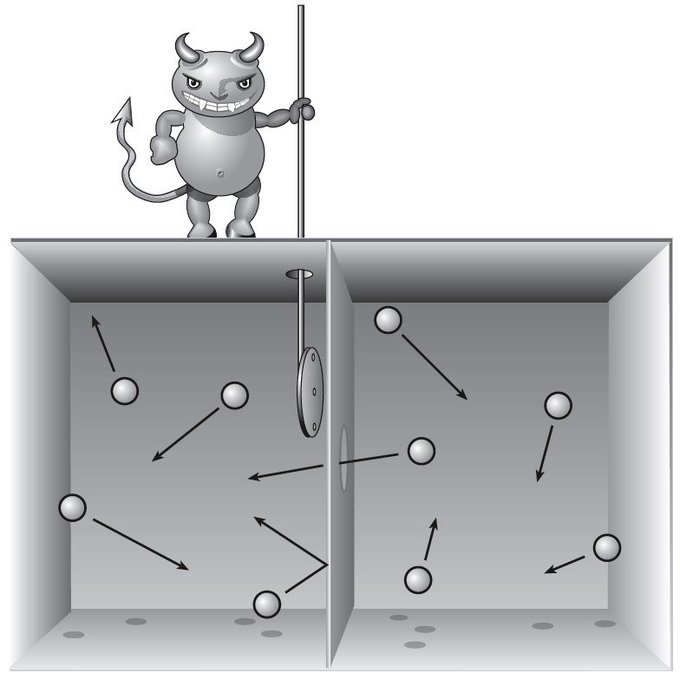
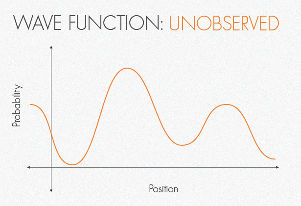
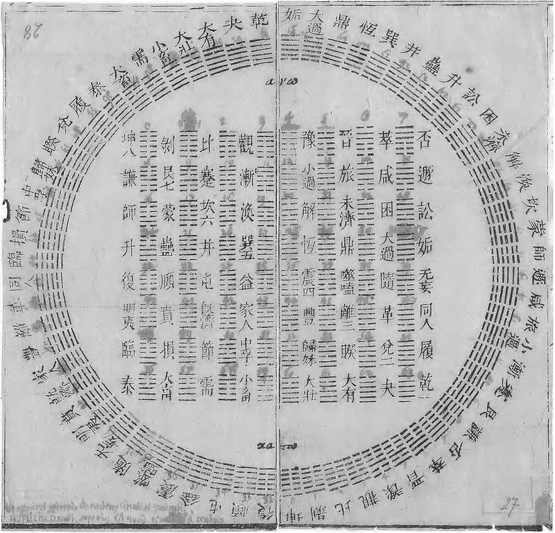
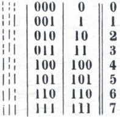
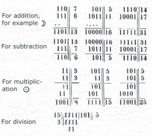
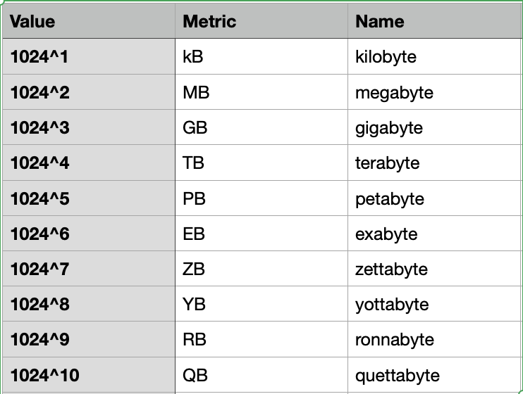
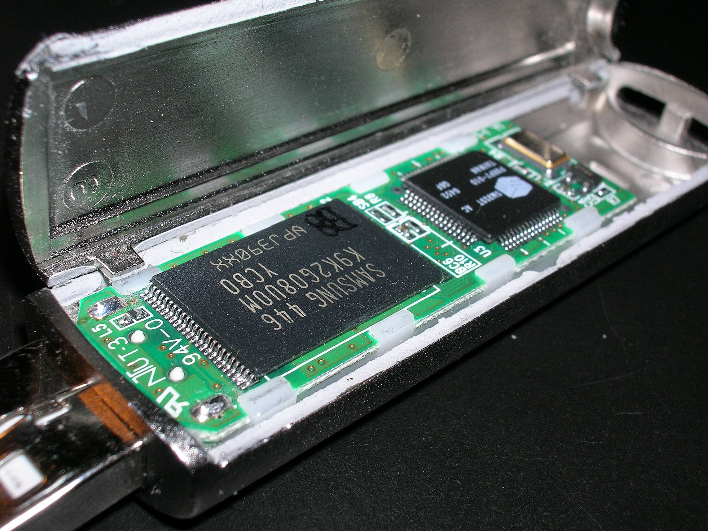
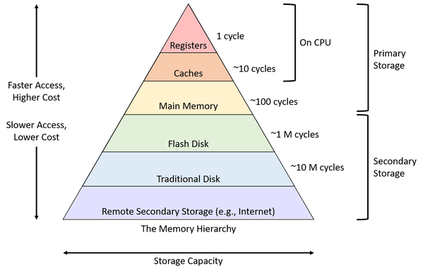
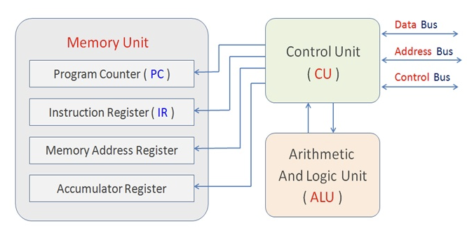

02-What Is Information
Silvestro Di Pietro
Silvestro Di Pietro


Silvestro Di Pietro
16/03/2023
Any process that is not completely random, and any observable pattern in any medium can be said to convey some amount of information.
For Claude Shannon (1948) the information consists
whathowwhoThe main idea about the Information theory is the “information value”
that depends from the novelty or how much the data is surprising.
Shannon introduce the entropy (as is in thermodinamics)
formulating the theory.
Data on the first sequence has very little meaning, but the value of the second sequence?
Concorso Nº30 del 11 March 2023

Maxwell elaborate this thought experiment in order to confutate his
2nd thermodynamics law trying to avoid entropy with a
demon.
62 year later Leo Szilard stated that acquiring information require energy increasing entropy, Léon Brillouin stated that the energy of this action is needed when the demon erase the information.

Acquiring the information cause the collapsing of the wave function.

Chings suggested to Gottfried Wilhelm Leibniz the numeration in base 2.
| ching symbol | Value |
|---|---|
| - - | 0 |
| — | 1 |

Binary is the minimal way to code information, and for this reason are widely used symbols in informatics.
https://www.leibniz-translations.com/binary.htm

Binary numbers are just numbers
1 kb =2^10 
Hexadecimals has 16 symbols
0 1 2 3 4 5 6 7 8 9 A B C D F
FFFF = 2^16 =
1111111111111111
Unix (and related) shells, AT&T assembly language and likewise the C programming language (and its syntactic descendants such as C++, C#, Go, D, Java, JavaScript, Python and Windows PowerShell) use the prefix 0x for numeric constants represented in hex: 0x5A3.
in URIs (including URLs), character codes are written as hexadecimal
pairs prefixed with
%: http://www.example.com/name%20with%20spaces where %20 is
the code for the space (blank) character,
ASCII code point 20 in hex, 32 in decimal.
In XML and XHTML, characters can be expressed as hexadecimal numeric
character references using the notation ode;, for instance
’ represents the character U+2019 (the right
single quotation mark). If there is no x the number is decimal (thus
’ is the same character)
Color references in HTML, CSS and X Window can be expressed with six
hexadecimal digits (two each for the red, green and blue components, in
that order) prefixed with #: white, for example, is represented as
#FFFFFF.[5] CSS also allows 3-hexdigit abbreviations with
one hexdigit per component: #FA3 abbreviates
#FFAA33 (a golden orange: ).
Random Access Memory, Usually we consider this volatile memory that need energy to keep the information stored
Read Only Memory: is a memory that can just be read and will store permanently the information without need of energy
Software written by MIT programmers was woven bit by bit into core rope memory by female workers in factories. Some programmers nicknamed the finished product LOL memory, for Little Old Lady memory.
A magnetic disk partitioned with sectors and block of data with a movable head reading and writing capable.

Flash memory is an electronic non-volatile computer memory storage medium that can be electrically erased and reprogrammed: is fast and cheap (in your phone the ram is this kind of memory)

